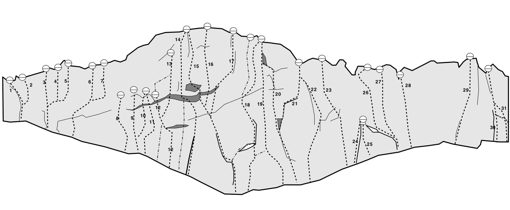
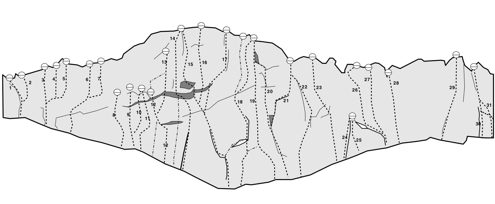

Lat: 66.043402 Long: 21.911545
MTV-väggen är ca 25m hög och hänger över 10m på det högsta stället. Här är det sportklättring med pumpande leder som gäller.
Av de kortare lederna är de få, eller inga, som är värda ett långväga besök.
är kanske den finaste av de korta lederna. Nej, till Niemisel kommer man för stora grepp och långa pumpande leder. Leder som
,
,
,
och
är alla värda långväga resor, myggbett, solbränna och blöt frustration.
Väggen är sydvänd och ligger öppet. Trots detta så är väggen ofta blöt p g a att vatten rinner genom väggen.
Yr.no håller reda på
. Det kan vara en bra idé att fråga på
om förhållandena.
Gunnarsbyn
i korsningen med väg 356 mot Boden. Kör i ungefär 2 km till dess ni ser några klippor på höger sida. Passera dessa med ytterligare knappt 1 km till dess att en liten skogsväg dyker upp på höger sida, mitt emot en infart. Har ni passerat en skylt som säger "Välkommen åter!" har ni kört 300 meter för långt. Parkera och gå längs skogsvägen i 30 meter till dess en stig viker av åt vänster. Följ stigen till klippan.
Topo:
 

Alla lednamn är målade på väggen. {| |- valign="top" | width=300px|
Har du redan klättrat allt det långa och fina? Det finns en hel del tänkbara och otänkbara länkar att klättra, nedan är några som har fått namn.
Om MTV-väggen skulle vara helt blöt så kan man åka till
Källsberget
som ligger 8 mil söderut. Källsberget är mycket mera kompakt, men inte riktigt av samma kvalite. Kännns det för långt så finns det även lite klättring på
Åberget
i Boden.
Luleå kommun har timrat upp några enkla stugor längs Råneälven. Dessa är gratis att övernatta i. En av stugorna ligger mycket nära klippan. Mellan byn och parkeringen till klippan pekar en skylt ner mot
Fornlämningar
samt mot
Långforsen N
(liten brun skylt). Kör ner 100 m och parkera vid en bred stig. Promenera 500 meter ner till älven (skyltat mot Långforsen), där står en stuga med bastu och utedass alldeles vid Råneälven. Stugan rymmer väl 4-6 klättrare, och skulle den vara full finns det ett par andra stugor längs älven nerströms.
Pumpy routes on overhanging granite with vulcanite-intrusions. One of Sweden's best sportclimbing cliffs, if not the best. Aim for the 25 m long routes in the center for the most memorable experience.
The main wall, i.e. the MTV-wall, is located in the village of Niemisel, around 60 km from Luleå. From Luleå, head north on road E4 up to exit Råneå N/Niemisel, and follow that road for 25 km until you are in Niemisel. Continue past a gas station and a small grocery store. Drive about 2 km until you see a couple of cliffs on your right. Drive about one km further until you see some overgrown remnants off a forest road on your right side, across from an entrance-way. Park your car and use the well-worn track up to the crag.
The city of Luleå has put up rent-free
along the river. The hut closest to the crag is by
Långforsen
. Between the parking for the crag and the village follow signs down towards
Fornlämning
and
Långforsen N
(a tiny brown sign). Park at the trailhead and walk 400 m down to the river. Next to the hut is a sauna and not far away an outhouse can be found.
The wilderness hut is for
temporary
accommodation. Please, no squatting. Stay not more than one or—at the very most—two nights in the same hut.
There is a small grocery store in the village, which is not open on Sundays. There are supermarkets and restaurants in nearby Råneå.
Kategori:klippa
Kategori:sport
Kategori:överhäng
Kategori:Norrbotten
Kategori:Komplett
Kategori:Extern förare
Kategori:Engelska
Copyright (C) Permission is granted to copy, distribute and/or modify this document under the terms of the GNU Free Documentation License, Version 1.3